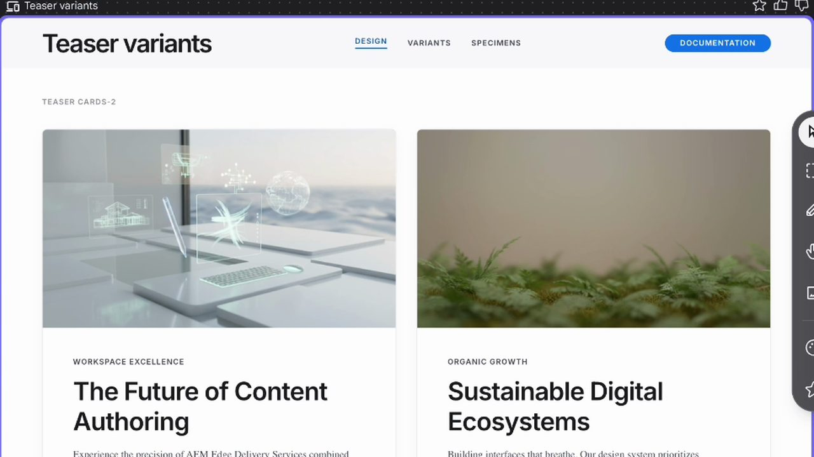
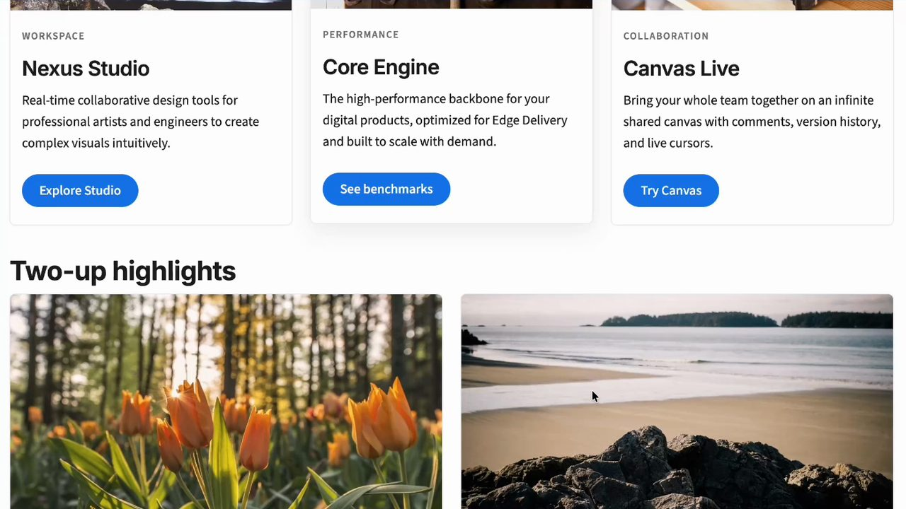
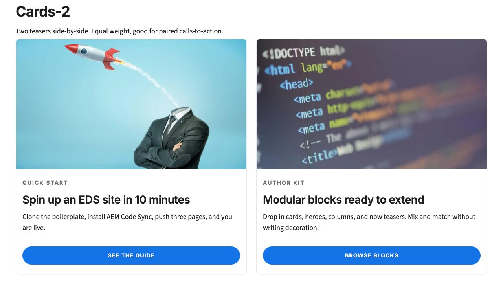

The six parts below follow the video. Each one links to its moment in the video if you'd rather watch.
First published as a LinkedIn video on May 24, 2026. Rewritten for this site in October 2026. Code: the theme landed in eds-skill-assess-2026-05 at d6355ee, the same site I built in my Adobe EDS skills video.
1. Three steps to theme a new EDS site
Say you have a brand-new website you want to theme. How do you approach it? The step I found missing from Adobe's skills is one that sets up typography and styles before anyone builds blocks. My site had a teaser block built with content-driven development and the boilerplate's default look. I broke the theming into three steps.
![Hand-drawn board titled Theming our new EDS site. Three boxes joined by arrows. Box 1, define what EDS theme could be: include EDS standards, aspirations, breakpoints, default content, the teaser and our vision. Box 2, use Google Stitch (figma killer?) and generate: paste in prompt, answer questions, question mark, profit (get design). Box 3, leverage Stitch MCP and theme an EDS site and our teaser: have AI get the design, theme the site and test in one prompt, go into the teaser and test, have AI deploy and show me the work.](images/board.png)
The first step matters most for EDS. I wanted Google Stitch to generate a theme that's EDS-friendly, so the definition includes the EDS standards, what default content is, and what breakpoints to design for. That gives Stitch the best chance of producing something that actually drops into an Edge Delivery site. The second step is Stitch itself, my preferred AI design tool. My board calls it a Figma killer, with a question mark. The third is the Stitch MCP server, which lets the agent pull the design out of Stitch and apply it to the site, then the teaser, testing as it goes.
Watch this part0:00 The three steps
2. One long prompt, and the agent drove Stitch through MCP
Since this was an experiment, I launched MLflow first to make sure the session was traced. Then I gave the agent one large prompt. When I want AI to do a thing or two for me, I give it a long first prompt, usually by talking to it with voice-to-text. The prompt gave the agent the context of what an EDS block is, asked it to think about what makes sense for theming, and pointed it at Google Stitch. It also linked Adobe's Development Collaboration and Good Practices page.
![MLflow trace of the first prompt. The trace has the tag skill_invocation_sources. The breakdown lists tool_ToolSearch, tool_Bash, four tool_Read spans, tool_WebFetch, tool_mcp__stitch__list_projects, tool_AskUserQuestion and another tool_WebFetch. The chat panel shows my spoken prompt about defining the theme of our website with a link to aem.live dev-collab-and-good-practices, and the assistant answering that it will gather the good-practices doc, the current default theme and the teaser block with all its variations before touching Stitch, loading tools and reading local files in parallel.](images/first-prompt-trace.jpg)
One thing that's very cool: the agent figures out what it needs to do and then does it in parallel. I've noticed Claude Opus 4.7 with the million-token context window does this quite often. It runs its research side by side, so you're not waiting for one lookup to finish before the next one starts. From a developer's point of view, that saves quite a bit of time.
Then I got a pleasant surprise. I'd forgotten I already had the Stitch MCP server configured on my machine at the user level. So instead of me pasting a prompt into Stitch, the agent drove Stitch directly through MCP, and steps one and two merged. With AI, sometimes the best-laid plans just change, and you go with it.
Watch this part1:15 One long prompt2:29 Research in parallel7:14 Back to the plan
3. Designing the theme in Stitch, between Apple and Adobe
Partway through, the agent stopped and asked me design questions as multiple choice, and I answered on the spot. Everyone likes Apple's and Adobe's clean design, so I asked for research on both and a hybrid somewhere between Apple and Adobe. Light, not dark. As with all things AI, I was improvising.
We also went a little backwards. Usually you have a design, then you build the variations. Here the teaser block already existed, built with content-driven development, so Stitch made proper designs for each teaser variant on top of the general theming. It created a Stitch project and a design system, then the typography and the teaser cards.
![Google Stitch project EDS, Apple by Adobe Hybrid Theme. On the right, a Teaser variants screen with two cards, The Future of Content Authoring and Sustainable Digital Ecosystems, each with a small uppercase eyebrow and a small uppercase blue pill button. On the left, Stitch's notes: both the 2-column and 4-column teaser grids use an 8px corner radius and faint tonal lifts; headlines use Inter with tight tracking and Source Sans 3 for body copy; the palette is anchored by #1d1d1f ink and #1473e6 brand blue; button specimens show the pill-style primary blue, outlined secondary and red accent fill.](images/stitch-design.jpg)
I'm not a designer, and a designer would probably have opinions on this. What I can say is that AI helped me prototype something that a year ago wouldn't even have been possible. Credit where it's due: Magic, one of the first MCP servers I experimented with about ten months earlier, generated UI in a similar way. Stitch works at a much higher level, both in creating design and in presenting it.
Watch this part3:23 Answering Stitch's questions4:29 Designing backwards from the teaser5:49 Credit to Magic
4. Wiring the design into styles.css, fonts and the teaser
When the agent asked what to do next, I said implement it now. On an Edge Delivery site, most of a theme lives in one place. The boilerplate's styles/styles.css starts with a :root block of CSS custom properties for colors, fonts and sizes, and every block reads from those. Fonts load from styles/fonts.css, and each block has its own CSS on top. The agent edited all three. Here's the new :root. Line 14, left out here, is a comment naming the Stitch design system, Considered Clarity:
:root { --background-color: #fff; --light-color: #f5f5f7; /* Apple grey: alternating sections, card surfaces */ --dark-color: #424245; /* Apple dark grey for subtle UI */ --text-color: #1d1d1f; /* near-black ink, never pure #000 */ --muted-color: #6e6e73; /* secondary text, eyebrows */ --border-color: #e8e8ed; /* hairline, low-contrast separators */ --link-color: #1473e6; /* primary blue, between Apple #0071e3 & Adobe #2680eb */ --link-hover-color: #0d5fc4; --accent-color: #e34850; /* Adobe red, reserved for high-impact CTAs */ --accent-hover-color: #d3373f; /* fonts */ --body-font-family: source-sans, source-sans-fallback, sans-serif; --heading-font-family: inter, inter-fallback, sans-serif;The boilerplate's six color tokens were re-pointed and four new ones added. Roboto and Roboto Condensed went out, with their four font files. Inter and Source Sans 3 came in as variable fonts, each with a fallback face sized against Arial so the page doesn't jump when they load.
The sample teaser below starts with the finished theme. Each switch puts one group back to the boilerplate value, so you can see how much of the look comes from a few lines of CSS. It's also why theming deserves its own pass: these tokens restyle every block on the site, not only the teaser.
Teaser block showcase
One block, four variants. Authored as a teaser block with a variant class.
Read the quick start guide next.
| Token | Boilerplate | Stitch theme |
|---|---|---|
--text-color | #131313 | #1d1d1f |
--link-color | #3b63fb | #1473e6 |
--light-color | #f8f8f8 | #f5f5f7 |
--dark-color | #505050 | #424245 |
--muted-color | none | #6e6e73 |
--accent-color | none | #e34850 |
--heading-font-family | roboto-condensed | inter |
--body-font-family | roboto | source-sans |
.button style | 2.4em radius, weight 500 | pill, uppercase, weight 700 |
.button.primary | text color fill | link color fill |
The finished theme from the commit: Stitch colors, fonts and buttons.
For testing, the agent started the local dev server on localhost:3000 and used the Playwright CLI as a skill. It took its own screenshots, read them, and acted on what it saw. Having the right skill certainly helps here.
It also did one thing I wouldn't do. It didn't realize the content was already on the server, so it built a local HTML page instead, drafts/theme-preview.plain.html, filled with sample content it wrote itself. Adobe's content-driven-development skill does describe local HTML as a temporary option for test content, but it's certainly not what I'd do in any real production setting. Since this was an experiment and MLflow was capturing everything, I let it go.
The first prompt ran for about twenty minutes without me. Around fifteen minutes in, it was still going, nonstop, on that one prompt. It's a good example of how long Claude can work without a lot of human interference.
Watch this part8:14 Testing on localhost9:23 The local HTML9:57 Twenty minutes in
5. The calls to action missed, and a second prompt fixed them
I asked the agent to open the teaser page in Chrome so I could compare it with the Stitch design. The theming looked good, and the site looked much better than the boilerplate. I liked the card shadow. But the calls to action were way off.
The three tabs below are the same teaser cards at each stage: the Stitch design the agent was working from, the first prompt's result, and the second prompt's fix. Look at the buttons: their case, their size and where they sit in the card.



/teasers page, captured October 3, 2026.So I sent a second prompt, through voice-to-text again: how did we miss the teaser, and how do we fix the calls to action? This one ran for 10 minutes and 23 seconds. The agent worked out that the theming was right but the teaser wasn't as accurate as it should be, went back, and got the call to action exactly where it needed to be on all four cards.
![The agent's summary in the terminal after the second prompt. It says the CTAs now match the Stitch comp: bold uppercase tracked Inter labels; full-width filled blue pills for cards-2 and cards-3; lighter DETAILS arrow text links for cards-4; the banner keeps the red accent and outlined secondary. It lists what it matched from the Stitch-generated CSS, the files it changed, and one judgment call: the Stitch project uses sentence case on the homepage screen but uppercase on the variants sheet, and it went with uppercase. The footer reads Crunched for 10m 23s.](images/second-prompt.jpg)
The summary shows something I liked. The Stitch project was internally inconsistent, sentence case on one screen and uppercase on the button reference sheet. The agent flagged that as a judgment call and told me which one it picked. Most of the fix was CSS in teaser.css: equal-height cards with the links pinned to the bottom, full-width buttons on the two- and three-card variants, and arrow links on the four-card one. One change was in the block's JavaScript, so the banner, the high-impact unit, gets the red accent button:
// banner is the high-impact unit: its first CTA uses the reserved accent (red); // card variants use the standard primary (blue). const primaryClass = variant === 'banner' ? 'accent' : 'primary';Watch this part10:36 Comparing with Stitch11:04 The second prompt11:34 The fixed calls to action
6. Next time, theme first and blocks second, with better input for Stitch
Looking back through the MLflow trace for the first prompt, the agent did a lot of research in parallel, created the Stitch project and then the design system, stopped to ask me its questions, then moved on to editing. It edited styles.css and understood what users are supposed to do on the teaser. Claude is also quite good at testing its own work: the Playwright CLI takes a screenshot, and the agent reads it and acts on it. For a single session, I'd call this fairly successful. The agent themed the site, prototyped the design in Stitch, and made it real in EDS.
There are two things I'd do differently:
- Never theme the main site and the teaser at the same time. Focus on one thing at a time, and the theming first. It's really important to get the theming right, and doing both at once is how the agent nailed one and missed the other.
- Give Stitch more deterministic, thoughtful instructions up front. If I had known one prompt would carry the whole flow through MCP from beginning to end, I would have put more context into it.
In August I came back to design on EDS from Adobe's side with Adobe Stardust, and compared it with a block library I had designed in Google Stitch. If you've themed a greenfield EDS site with an agent, I'd like to hear how you split the passes.
Watch this part12:13 The trace13:27 Two things I'd do differently